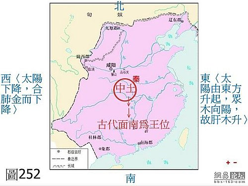

脈理醫理學 31.0：藥王脈學重要醫理生理病理模型‥‥‥五臟相互灌溉圖（陰平陽秘，六脈以平為期）－－修正五行生剋圖的謬誤（一併說明：隔一隔二隔三之治、五行生剋之治（如見肝之病，當先實脾）、臟腑別通、左升右降、水寒土濕、扶陽理論）（下）
作者：陳建元
上接脈理醫理學 31 ：藥王脈學重要醫理生理病理模型‥‥‥五臟相互灌溉圖－－修正五行生剋圖的謬誤（上）

圖引用自：http://bbs.news.163.com/bbs/history/106327030.html
隔二隔三、五行生剋、臟腑別通、水生木、瀉南補北、‥‥‥等，都只是傳統中醫在套方用藥下的誤解（依脈圖上來看的話，說存在也存在，說不存在也不存在），在這樣子的固定玄理的用藥方式之下，你沒辦法去控制何時該用這些理論，何時不該用，說這些沒道理嗎？有時會有效，說有效嗎？你每個病患都這樣用，又會發現很多都沒效，於是很多人就思啊想啊，百思不得其解，於是又鑽入玄學中去了，於是有的人又搬〝天人合一〞進來（天人合一有其事實，但不是任意套用），〈圖252〉是中原的古地圖，當你看到這圖時，你想到什麼？古代以面朝南面為王位，這是因為山丘走向的關係，山的南面是向陽的是光明的，山的北面是陰暗的，所以古代尊面南為王位（所以失敗叫做敗北，而不叫敗南）。當你在地圖上面朝南時，你的左手是東方，是太陽升起來的地方（象徵肝木），右手是太陽西降的地方（象徵肺金），而你住在中央的中土（土要乾燥，人才能居住在上面，沼澤軟泥地無法蓋房子），所以說左升右降，肝升肺降，中土要燥，而在居住的空間上，在地圖上，愈往南邊走，天氣是愈來愈熱的，所以要「瀉南」（瀉火、瀉心火），愈往北邊走，天氣是愈來愈冷的，所以要「補北」（溫補、溫補腎陽），這就是肝升肺降（肝木 當升、肺金當降）、水寒火旺（水寒當溫補、火旺當涼瀉）、瀉南補北、疏肝燥土（肝木當疏當升、所住的中土不能濕、要燥）、扶陽理論（補北、補水理論、水寒當溫補）等概念的由來，這些理論後來成為一些醫家的用藥概念，譬如在配方中，一定要疏肝，一定要補陽，一定要燥脾濕，‥‥‥，但事實上並非如此，因為人不一定要面向〝南〞，就是面南，人的生理、病理，也未必這樣走，雖然提出了一些立論，但也很容易走入偏見，變成沒有去細究病機和現實情況，而是執著著玄理在用藥。
〝陰平陽秘，六脈以平為期〞（《內經》中說的陰平陽秘即是太極圖也，各處的陰陽皆處於動態平衡的〝穩態環境〞之中，如此才能確保萬物的生生不息），這才是臨床上真正在使用的口訣和訣竅，實際的人體基礎模型，就是〈圖249〉這個樣子，五臟皆有升降的事實，這在臨床上都可被觀察到。臨床上的事實是這樣子在運作的，當發現外證悶悶不樂、肝脈沉弦、或諸脈微沉弦時，此時方是〝肝鬱氣滯〞，就要疏肝、升肝（如仲景吳茱萸湯即疏肝、溫肝是也），經曰：「肝氣虛，如人將補之是也。」相反的，若遇見外證面紅氣粗、肝脈心脈弦大洪實、或諸脈弦大洪實，而下按全空的高血壓患者，這是肝升太過而陰陽欲分離，應該要鎮肝、斂肝、養肝陰、則肝升太過就能下降，若是仍固執疏肝，一疏往往使過升的肝陽再升上去，一下子就中風了。如感冒時常見肺脈浮升而有力，此時用解表諸法，則肺脈自降，是肺降誠然也；但若見久年肺萎久病之唾涎沫不已而肺脈沉細無力者，外證雖有肺氣上逆的咳嗽，卻宜升肺、溫肺、升氣，而逆氣反而能平，即仲景的乾薑甘草湯之類是也，是知未必皆降肺也。又如土濕之說，這也都不是絕對，臨床見其面黃白、肉鬆軟體寬胖、說話聲音含糊如甕中出聲、脾脈沉緩虛弱，此皆脾虛有濕之徵，燥脾濕補脾土誠然也；但常見一派枯瘦色黑帶紅而憔悴、脾脈浮細數、鼻頭微紅之脾胃陰分不足之胃炎、胃出血患者，五汁飲、石斛、玉竹之類則剛好對證，若是仍執著燥脾濕下白朮、理中湯，焉有不轉胃痛、胃出血的道理？
總之，臨證用藥需以脈證、實際病情情況來估量，不能先入為主，若是心中先存成見，很難不誤事，所謂的肝升肺降、土濕木鬱、萬病補陽，都不是絕對的，誰說北方腎水一定要補呢？仲景豬苓湯即是瀉腎也，誰說南方心火一定要瀉呢？仲景炙甘草湯即是補心也。所以一切要以臨床為依歸，觀其脈證，知犯何逆，隨證治之，五臟六腑都各有升降，觀其升降不平處，隨證而治之，這才是臨床真實的情況，而不能事先認定治心、心包、肺、膽、胃、膀胱一定要用降藥；治腎、大腸、肝、脾、小腸、三焦一定要用升藥，這類的套用天人相應或玄理的方式都不可靠，因為臨床上有很多相反的現象，譬如臨床上會看到心包（血脈）塌陷要升起來的中風之人，補陽還五湯之類是也；有胃下垂要升的，補中益氣湯之類是也；有小腸急性梗阻要降的，仲景抵當湯之類是也；有大腸便秘要降的，仲景承氣湯之類是也。臟腑之升降，乃是觀察臨床所需要來因應，不能自己亂套天人相應先規劃好。
另外要知道，除非你是帝王，否則平民百姓誰跟你面南稱王？轉個方向面東時，再套天人相應，就會發現變成前升後降（治心火要溫升、治腎水要降瀉），左手冷右手熱（治肝要溫補、治肺要涼瀉），每轉個方位，整個治則就亂一次，這類的玄理是行不通的，又歸回基礎概論 43：方證對應的迷惑這篇了（這篇講的是套方的弊病，而這邊則是亂套玄理的弊病），有效率也是在3成左右。（總會矇中某個比例，但矇中後就完蛋了，便以為真有什麼神秘玄理在裡面，而猛在裡面打轉了，就像賭博，前面幾次讓他贏錢，接著後面就非深陷不可了。花了一輩子在裡面轉，最後結論還是會發現只有3成，終究是行不通的。）其實以上的種種，都是看病不找病機不查病源，有方就套，有玄理就套的弊病（雖然自《內經》一直強調要找病機、病源，可是真的在做的沒幾個）。
‥‥‥‥‥‥‥‥‥‥‥‥‥‥‥‥‥‥‥‥‥‥‥‥‥‥‥‥‥‥‥‥‥‥‥‥
再把一些結論整理一下：
1. 中醫的五行生剋雖也是取用五組系統來當代名詞，但並不具術數上的五行生剋意義或規律，五組系統中，每一組都可以生任何其他四組，每一組也可以剋其他四組，這只是用來說明疾病的病源，可以來自於不同系統源，關於這點，在《傷寒論》、《脈經》中的資料已經指出來了，這本身就是脈學中的一部份，使用的方法，就是找證據，你能找到脈或證上的明顯證據，則代表病機病源之所在，對其發矢必中。也就是說〈圖248〉本來就是錯的，沒有人在跟你講術數的概念，就是術數中，也沒人這樣在用的，譬如木要剋土，也還牽涉一個「量」上的問題，你要多大的木才能剋的了土？一點點的木就能剋很大的土嗎？這是不可能的，所以我們在紫微斗數等命相學，會發現星曜上還有亮度上的強弱區別，在60納甲中也會發現五行都有強弱的區別，並非等量齊觀（譬如五行中的火，還有霹靂火、爐中火、覆燈火、‥‥‥之區別；木有大林木、平地木、楊柳木、‥‥‥之區別。即五行中的任何一行，都各自還有強弱之等級差別也，譬如雖說火生土，但覆燈之微火，其實對於生土，於事無補也。）不能就直接這樣火剋金、金剋木，然後就直接判定哪個臟腑如何如何，或指導從哪邊下藥，這樣的邏輯是有問題的。又譬如一個脾土的問題就變化多端，有的人講到脾土，一開口就是土太濕，要燥土要怎樣，其實都是不一定的，臨床皆要看現場來判定，隨其脈證的不同，分析其病機之不同而治療才是道理，譬如以仲景的用藥來看的話：土虛，小建中湯之類是也；土寒，大建中湯之類是也；土寒有濕，理中湯之類是也；土氣陰不足，桂枝湯之類是也；土實而熱，白虎湯之類是也；土實而壅，承氣湯之類是也；土壅而虛，麻子仁丸之類是也；土氣陰不足兼有濕，竹葉石膏湯之類是也；土寒熱虛實相夾，瀉心湯之類是也；土有久瘀兼虛，小建中合大黃庶蟲丸是也；‥‥‥，這皆反應出臨床上的多變，你要去瞭解患者的病情，要去聽患者說什麼，按他的肌膚、查患者的神氣、比較症狀的異同，然後調度用藥來救治病人（其實觀察醫療現場，你會發現木未必剋土，土也可以剋木，木也可以生土‥‥‥，千姿萬態都有可能，都要憑實情、踏實地、講實話，而不是可以用五行生剋來恣意推演的，參考雜論 10：中醫是照五行生剋在看病的嗎？）
2. 中醫裡的五行是指心肝脾肺腎五個系統，在醫學的講解，先設立這些初級系統是必須的，因為你沒有這些系統的話，如何開始講解和描述人體的生理和病理，像有些大師就莫名奇妙的為反對而反對，說心肝脾肺腎是一種〝祭祀品〞，跟人體無關，不能用來解釋中醫，這也是整個無厘頭。先設立五組代號（心肝脾肺腎），只是為了有一個工具和稱謂，醫學的東西都是出自於〝觀察〞，人體哪邊的實地觀察不符合實情，隨時都可以修正的，譬如現在通用的肝木、心火、脾土、肺金、腎水的配屬模式，也是觀察到五臟系統所表現出來的現象，和這些特性比較相近，所以才取為代號，因理論與實踐所觀察到的相符合，所以才會用到今天沒有改變，而古書中的 《尚書》、《呂氏春秋》、《禮記‧月令》中，另有一種脾木、肺火、心土、肝金、腎水的配屬模式，這些才是和古代的〝祭祀品〞有關，但並未被中醫所採用，對中醫也沒有什麼影響，兩者不宜混為一談。又譬如有人說肺合皮毛、合鼻、合涕‥‥‥，這些都很神奇沒道理，其實一點都不玄奇，所謂的肺合肺合皮毛、合鼻、合涕，是因為觀察到感冒的時候，皮膚是不是會畏寒或發熱？鼻塞不通？流鼻涕？這不是肺合皮毛、合鼻、合涕是什麼？這是古人在跟你說，觀察到肺和皮毛、鼻、涕之間應該有內在的關聯性，所以把它們整合在一起，所以說肺合皮毛、合鼻、合涕。但要注意的是，這只是一種被觀察到的片面紀錄而已，並沒有跟你說這是一種不變的〝規律〞，所以並不是所有的皮膚病都從肺醫，這樣是絕對醫不動的。
3. 這些五行生生剋剋的問題，困擾了學中醫的人，應有千年之久（千年來吵吵鬧鬧無結論），就是很多大家，也不知道如何取捨，今天在此一併解開。凡舉五行相生、相剋、相乘、相伍、制化、亢害承制、所勝、所不勝、五勝、子氣、母氣、母病及子、子盜母氣、木克土、木火刑金、火旺刑金、火不生土、土生萬物、金寒水冷、水不涵木、水火不濟、隔一隔二隔三之治、臟腑別通、左升右降、水寒土濕，這些東西都是一樣的，都是臨床上曾經被觀察到的片面現象和經驗，所以被記錄下來，但問題是中醫自古脈法就是只有密傳不對外公開（因為它是關鍵技術），查一下馬光亞教授的文章，就知道脈法在馬教授那個年代，跟老師習脈尚要在神前立重誓不對第3者說出，否則天打雷劈，這種種都造成中醫的沒落，以上這些神秘的五行生生剋剋，就是在這種情況下產生的。譬如明明是女子下焦的〝帶下病〞，屬於〝腎病〞系統，卻開〝肝系統〞的肝藥來治，在以脈法來看的時候，並不神奇，只是指出〝病機〞在哪裡而已，但因為古中醫裡，90％的人還是以套方劑加減為主體，所以他們無法去理解為什麼華陀、扁鵲這些人要這樣開藥，在百思不解的情況下，有一種說法就出來了，說這叫〝母病及子（腎是水，肝是木）〞，所以才開肝藥。以上的相乘、相伍、制化、亢害承制、所勝、所不勝、五勝、子氣、母氣、母病及子、子盜母氣、木克土、木火刑金、火旺刑金‥‥‥種種，都是這樣來的，實際問題還是卡在脈法，因為脈法的隱匿不傳，所以大部分的醫家缺乏工具去掌握何時該用這些東西，何時不該用，也就是無法掌控的意思，但因為確實有用這種方式治好的案例，於是這種說法還是被保留下來。然後後代的醫家又分成兩派，但兩派還是都不懂脈法，於是這些東西就成為千年來的爭執點，一派認為中醫要科學，五行生剋之類沒意義，應該要丟棄，但在實際上，自己的療效又抬不高，因為丟掉之後，只知道腎病從腎系統來治，而不知道病源可能來自其他系統；一派則認為五行生剋可能有不可知的神秘意義，要不然用正規方式治〝帶下病〞不癒的時候，為什麼用五行生剋中的〝母病及子〞思維試試看，說不定就通了，所以五行生剋可能具有某種神秘的意義在內，所以不當拋棄。
這就是千年來的紛擾，本來這只是一種脈學技術，在《內經》中早就已經開始記載了，奈何後代卻不會用，在以套方為主體的中醫下累積起來的中醫經驗（90％以上的古今中醫都是這樣子），充滿了一卡車的矛盾和無法解釋，於是外行人看中醫，誤解成神秘不可測的玄學，變成──中醫很玄無法理解、中醫不太可靠無法複製、中醫是模糊的、隨機的、中醫沒有系統的理論，面對百年來外界的質疑聲浪，中醫自己也講不出個所以然來，只能嘴巴開開，陷入沉默沉思中。我們今天在此一併把這些東西講清楚說明白了，後代學中醫的人就不會這麼難，而且會知道中醫其實是可捉摸，是有固定規則的，規則即是「病機」，以上種種的生生剋剋，都是在套方系統、套玄理系統下，對「病機」迷惑下所產生的煙霧幻境。相同的，看病的關鍵，在於比對脈、證，找出「病機」何在？就會有解，這是看病下藥的第一步，譬如上述案例中的〝帶下病〞，病機在肝，就要從肝來解，而不是由腎來解，那如果從肝解還解不開呢？那就是只剩下選藥不精、組方太雜、兼夾病機、久病沒有先開絡道‥‥‥，這一些藥理、醫理上的因素而已，再回頭過來把這些東西一一檢視，就會發矢必中，沒有開藥開不動的道理。明白上面這些東西，你會發現岐伯、黃帝、華陀、扁鵲、仲景‥‥‥，他們所傳下來的脈證式中醫，是有一定的理法架構和章法規矩的技術，並不是隨性開什麼藥、不可捉摸、深奧玄理的〝隨性〞藝術，更不宜和〈圖248〉那種術數上的五行生剋混為一談。
下面這條也看一下，你會知道整個中醫的問題出在哪裡？脈理醫理學 15.25：中醫解惑（十五）中醫的五行生剋，到底是在講什麼？
【引用請先來信告知徵求同意，若有涉及販售營利等商業行為，版權所有拷貝盜用必究。】
【藥王脈學講壇】http://blog.xuite.net/drjychen/twblog